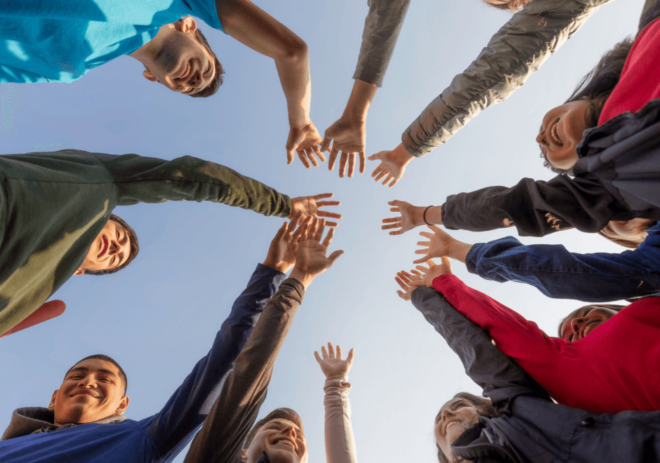

How to Get Involved
Here are a few ways you can strengthen your community connections:
- Join local groups or clubs that align with your interests.
- Participate in community events or volunteer initiatives.
- Support local businesses and organizations.
- Engage with neighbors and build relationships.
